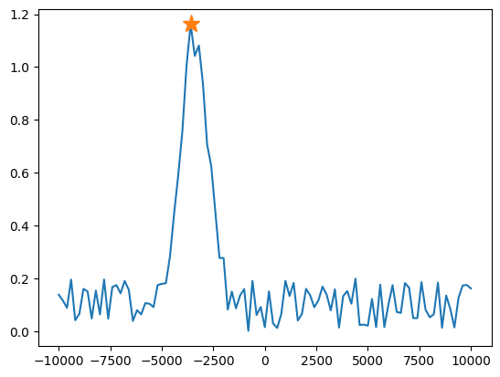

Calibration Nodes
Introduction
Calibration nodes in QUAlibrate encapsulate calibration routines into reusable components that can run independently or as part of larger workflows. This guide demonstrates how to transform an existing calibration script into a QualibrationNode to fully leverage the flexibility and scalability of QUAlibrate.
Initial Script
As a basic example, let us assume we already have a calibration script. Such a script typically runs a program on quantum control hardware. For this example, we will use a simplified script that emulates data for demonstration purposes, rather than an actual quantum control script:
import numpy as np
from matplotlib import pyplot as plt
# Define input parameters
span = 20e3
num_points = 101
# Generate data
offset = np.random.rand() * span / 5
width = span / 20
noise_factor = 0.2
sweep_values = np.linspace(-span / 2, span / 2, num_points)
gaussian = np.exp(-((sweep_values + offset) / width) ** 2)
noise = noise_factor * np.random.rand(num_points)
data = gaussian + noise
# Analyse results
peak_idx = np.argmax(data)
peak_coord = sweep_values[peak_idx]
peak_val = data[peak_idx]
# Plot results
fig = plt.figure()
plt.plot(sweep_values, data)
plt.plot(peak_coord, peak_val, "*", ms=14)
The emulated data consists of a peak with noise superimposed, and the script extracts the peak. The resulting figure should look something like the following

Conversion into a QualibrationNode
We now make adjustments to the previous script to transform the code into a QualibrationNode. We first present the individual modifications, and then present the fully converted node.
Importing qualibrate
The first step is to import the relevant classes from qualibrate. We need NodeParameters to encapsulate the parameters and QualibrationNode to create the node:
from qualibrate import NodeParameters, QualibrationNode
Defining Input Parameters
Instead of defining parameters as standalone variables, we group them together in a NodeParameters subclass:
class Parameters(NodeParameters):
span: float = 20e3
num_points: int = 101
Using NodeParameters allows parameters to be modified externally, such as through the QUAlibrate web interface. For example, this makes it easy to adapt calibration settings for different hardware configurations without changing the code.
Creating the QualibrationNode
Next, we instantiate the QualibrationNode with a unique name ("emulated_calibration") and provide an instance of the Parameters class:
node = QualibrationNode("emulated_calibration", parameters=Parameters())
This will enable the QualibrationLibrary to run this calibration node externally, provided that the script is located in the calibration_library_folder of the configuration file.
Avoid significant code before this point
The QualibrationLibrary executes each calibration node script sequentially until a QualibrationNode is instantiated.
This approach optimizes efficiency by stopping further execution once the node is created, preventing unnecessary code execution and saving system resources.
Avoid placing time-consuming operations, such as hardware initialization, before this point to ensure efficient scanning by the library.
Using Node Parameters in the Script
The original script can now be adapted to use parameters from the NodeParameters instance:
sweep_values = np.linspace(-node.parameters.span / 2, node.parameters.span / 2, node.parameters.num_points)
This ensures that parameters can be easily adjusted when the node is called externally.
Registering Results
Once the data has been retrieved and analysed, we register the results with the node to ensure they are saved after execution:
node.results = {
"figure": fig,
"arrays": {"sweep_values": sweep_values, "data": data},
"peak_coord": peak_coord,
"peak_val": peak_val,
}
A variety of results can be stored, including
- Standard types:
str,int,float,bool, etc. - Nested lists and dictionaries
- Numpy arrays
- Xarray datasets
- Matplotlib figures
Additional result types can be supported via plugins.
Saving Results
Finally, the registered results are saved using the following command:
node.save()
This saves the results in the location specified by qualibrate.storage.location in the configuration file.
Fully Converted Node
After following all the steps, the fully converted node looks as follows:
import numpy as np
from matplotlib import pyplot as plt
from qualibrate import NodeParameters, QualibrationNode
# Define input parameters for QualibrationNode
class Parameters(NodeParameters):
span: float = 20e3
num_points: int = 101
# Create QualibrationNode
node = QualibrationNode("emulated_calibration", parameters=Parameters())
# Generate data using node parameters
offset = np.random.rand() * node.parameters.span / 5
width = node.parameters.span / 20
noise_factor = 0.2
sweep_values = np.linspace(
-node.parameters.span / 2,
node.parameters.span / 2,
node.parameters.num_points
)
gaussian = np.exp(-((sweep_values + offset) / width) ** 2)
noise = noise_factor * np.random.rand(node.parameters.num_points)
data = gaussian + noise
# Analyse results
peak_idx = np.argmax(data)
peak_coord = sweep_values[peak_idx]
peak_val = data[peak_idx]
# Plot results
fig = plt.figure()
plt.plot(sweep_values, data)
plt.plot(peak_coord, peak_val, "*", ms=14)
# Register results
node.results = {
"figure": fig,
"arrays": {"sweep_values": sweep_values, "data": data},
"peak_coord": peak_coord,
"peak_val": peak_val,
}
# Save results
node.save()
This node can still be executed directly from any code editor and shouldn't cause any different behaviour. The advantage is that it can now also be called externally, for example as part of a calibration graph, or through the QUAlibrate Web App.
Combining QUAM with QUAlibrate
QUAM (Quantum Abstract Machine) abstracts the QUA programming language, letting researchers focus on qubits and quantum operations instead of hardware. Integrated with QUAlibrate, QUAM streamlines calibration, enabling smooth transitions between quantum programming and system calibration.
QUAM serves as a persistent digital model of the quantum setup. Calibration nodes update specific entries in QUAM, creating an evolving system model. Each calibration node loads the latest version of QUAM, ensuring consistency and efficiency throughout the calibration process.
For details on QUAM please visit http://qua-platform.github.io/quam/.
To incorporate QUAM into the QualibrationNode, we assume QUAM can be loaded using a method like QuAM.load(). It can then be added to the node as follows:
node.machine = QuAM.load()
This step automatically includes a snapshot of QUAM when saving the node using node.save().
Additionally, if quam.state_path is set in the configuration file, it will be updated when saving the node.
Finally, the QualibrationNode also provides a way to record any changes to QUAM interactively by encapsulating these state updates as follows:
with node.record_state_updates():
# Modify the resonance frequency of a qubit
machine.qubits["q0"].f_01 = 5.1e9
This will simply update the values if the script is executed normally. However, if the node is executed through the QUAlibrate Web App, any changes will be presented as a proposed state update to the user, allowing them to interactively accept or decline the changes based on the measurement outcomes.
Note that this action should be performed before calling node.save().
Structuring Nodes with Actions (Optional)
While the examples above show the entire logic within a single script, you can optionally structure your QualibrationNode code using Node Actions. This approach involves breaking down the node's logic into distinct functions marked with the @node.run_action decorator.
Using Node Actions offers several advantages:
- Improved Readability & Maintainability: Encapsulating logic (e.g., data generation, analysis, saving) into named functions makes the script easier to understand and modify.
- Clearer Execution Flow: Conditional execution (
skip_if) can be handled cleanly within the decorator, avoiding complexif/elseblocks in the main script body. - Enhanced Modularity: Actions function as largely independent units, sharing data explicitly via
node.namespace. This reduces coupling between different parts of the script. - Interactivity: Actions can often be recognized as runnable cells in editors like VS Code, simplifying debugging and interactive execution of specific steps.
- Web App Integration: The QUAlibrate Web App displays the currently running Node Action, providing better visibility into the execution progress of your calibration script.
For a detailed explanation and examples of how to use Node Actions, including data sharing and conditional execution, please refer to the Node Actions page.